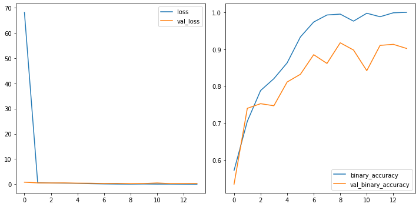
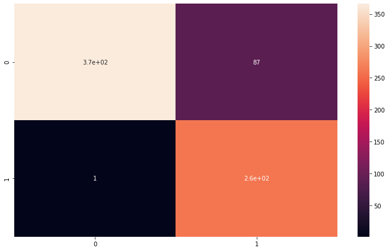

General Applications of Neural Networks
Session 4: Computer Vision Part 2 (Defect Detection Case Study)¶
Instructor: Wesley Beckner
Contact: wesleybeckner@gmail.com
In this session we will continue with our exploration of CNNs. In the previous session we discussed three flagship layers for the CNN: convolution ReLU and maximum pooling. Here we'll discuss the sliding window, how to build your custom CNN, and data augmentation for images.
images in this notebook borrowed from Ryan Holbrook
4.0 Preparing Environment and Importing Data¶
4.0.1 Enabling and testing the GPU¶
First, you'll need to enable GPUs for the notebook:
- Navigate to Edit→Notebook Settings
- select GPU from the Hardware Accelerator drop-down
Next, we'll confirm that we can connect to the GPU with tensorflow:
%tensorflow_version 2.x
import tensorflow as tf
device_name = tf.test.gpu_device_name()
if device_name != '/device:GPU:0':
raise SystemError('GPU device not found')
print('Found GPU at: {}'.format(device_name))
Found GPU at: /device:GPU:0
4.0.2 Observe TensorFlow speedup on GPU relative to CPU¶
This example constructs a typical convolutional neural network layer over a random image and manually places the resulting ops on either the CPU or the GPU to compare execution speed.
%tensorflow_version 2.x
import tensorflow as tf
import timeit
device_name = tf.test.gpu_device_name()
if device_name != '/device:GPU:0':
print(
'\n\nThis error most likely means that this notebook is not '
'configured to use a GPU. Change this in Notebook Settings via the '
'command palette (cmd/ctrl-shift-P) or the Edit menu.\n\n')
raise SystemError('GPU device not found')
def cpu():
with tf.device('/cpu:0'):
random_image_cpu = tf.random.normal((100, 100, 100, 3))
net_cpu = tf.keras.layers.Conv2D(32, 7)(random_image_cpu)
return tf.math.reduce_sum(net_cpu)
def gpu():
with tf.device('/device:GPU:0'):
random_image_gpu = tf.random.normal((100, 100, 100, 3))
net_gpu = tf.keras.layers.Conv2D(32, 7)(random_image_gpu)
return tf.math.reduce_sum(net_gpu)
# We run each op once to warm up; see: https://stackoverflow.com/a/45067900
cpu()
gpu()
# Run the op several times.
print('Time (s) to convolve 32x7x7x3 filter over random 100x100x100x3 images '
'(batch x height x width x channel). Sum of ten runs.')
print('CPU (s):')
cpu_time = timeit.timeit('cpu()', number=10, setup="from __main__ import cpu")
print(cpu_time)
print('GPU (s):')
gpu_time = timeit.timeit('gpu()', number=10, setup="from __main__ import gpu")
print(gpu_time)
print('GPU speedup over CPU: {}x'.format(int(cpu_time/gpu_time)))
Time (s) to convolve 32x7x7x3 filter over random 100x100x100x3 images (batch x height x width x channel). Sum of ten runs.
CPU (s):
2.8009356639999936
GPU (s):
0.03463296600000376
GPU speedup over CPU: 80x
4.0.3 Import Packages¶
import os
import pandas as pd
import numpy as np
import seaborn as sns
import matplotlib.pyplot as plt
import tensorflow as tf
from tensorflow.keras.preprocessing import image_dataset_from_directory
#importing required libraries
from tensorflow.keras.preprocessing.image import ImageDataGenerator, load_img, img_to_array
from tensorflow.keras.models import Sequential
from tensorflow.keras.layers import Activation, Dropout, Flatten, Dense, Conv2D, MaxPooling2D, InputLayer
from tensorflow.keras.callbacks import EarlyStopping
from sklearn.metrics import classification_report,confusion_matrix
4.0.4 Load Dataset¶
We will actually take a beat here today. When we started building our ML frameworks, we simply wanted our data in a numpy array to feed it into our pipeline. At some point, especially when working with images, the data becomes too large to fit into memory. For this reason we need an alternative way to import our data. With the merger of keras/tf two popular frameworks became available, ImageDataGenerator and image_dataset_from_directory both under tf.keras.preprocessing.image. image_dataset_from_directory can sometimes be faster (tf origin) but ImageDataGenerator is a lot simpler to use and has on-the-fly data augmentation capability (keras).
For a full comparison of methods visit this link
# Sync your google drive folder
from google.colab import drive
drive.mount("/content/drive")
Mounted at /content/drive
4.0.4.1 Loading Data with ImageDataGenerator¶
# full dataset can be attained from kaggle if you are interested
# https://www.kaggle.com/ravirajsinh45/real-life-industrial-dataset-of-casting-product?select=casting_data
path_to_casting_data = '/content/drive/MyDrive/courses/tech_fundamentals/TECH_FUNDAMENTALS/data/casting_data_class_practice'
image_shape = (300,300,1)
batch_size = 32
technocast_train_path = path_to_casting_data + '/train/'
technocast_test_path = path_to_casting_data + '/test/'
image_gen = ImageDataGenerator(rescale=1/255) # normalize pixels to 0-1
#we're using keras inbuilt function to ImageDataGenerator so we
# dont need to label all images into 0 and 1
print("loading training set...")
train_set = image_gen.flow_from_directory(technocast_train_path,
target_size=image_shape[:2],
color_mode="grayscale",
batch_size=batch_size,
class_mode='binary',
shuffle=True)
print("loading testing set...")
test_set = image_gen.flow_from_directory(technocast_test_path,
target_size=image_shape[:2],
color_mode="grayscale",
batch_size=batch_size,
class_mode='binary',
shuffle=False)
loading training set...
Found 840 images belonging to 2 classes.
loading testing set...
Found 715 images belonging to 2 classes.
4.0.4.2 loading data with image_dataset_from_directory¶
This method should be approx 2x faster than ImageDataGenerator
from tensorflow.keras.preprocessing import image_dataset_from_directory
from tensorflow.data.experimental import AUTOTUNE
path_to_casting_data = '/content/drive/MyDrive/courses/tech_fundamentals/TECH_FUNDAMENTALS/data/casting_data_class_practice'
technocast_train_path = path_to_casting_data + '/train/'
technocast_test_path = path_to_casting_data + '/test/'
# Load training and validation sets
image_shape = (300,300,1)
batch_size = 32
ds_train_ = image_dataset_from_directory(
technocast_train_path,
labels='inferred',
label_mode='binary',
color_mode="grayscale",
image_size=image_shape[:2],
batch_size=batch_size,
shuffle=True,
)
ds_valid_ = image_dataset_from_directory(
technocast_test_path,
labels='inferred',
label_mode='binary',
color_mode="grayscale",
image_size=image_shape[:2],
batch_size=batch_size,
shuffle=False,
)
train_set = ds_train_.prefetch(buffer_size=AUTOTUNE)
test_set = ds_valid_.prefetch(buffer_size=AUTOTUNE)
Found 840 files belonging to 2 classes.
Found 715 files belonging to 2 classes.
# view some images
def_path = '/def_front/cast_def_0_1001.jpeg'
ok_path = '/ok_front/cast_ok_0_1.jpeg'
image_path = technocast_train_path + ok_path
image = tf.io.read_file(image_path)
image = tf.io.decode_jpeg(image)
plt.figure(figsize=(6, 6))
plt.imshow(tf.squeeze(image), cmap='gray')
plt.axis('off')
plt.show();
4.1 Sliding Window¶
The kernels we just reviewed, need to be swept or slid along the preceding layer. We call this a sliding window, the window being the kernel.

What do you notice about the gif? One perhaps obvious observation is that you can't scoot all the way up to the border of the input layer, this is because the kernel defines operations around the centered pixel and so you bang up against the margin of the input array. We can change the behavior at the boundary with a padding hyperparameter. A second observation, is that the distance we move the kernel along in each step could be variable, we call this the stride. We will explore the affects of each of these.
from tensorflow import keras
from tensorflow.keras import layers
model = keras.Sequential([
layers.Conv2D(filters=64,
kernel_size=3,
strides=1,
padding='same',
activation='relu'),
layers.MaxPool2D(pool_size=2,
strides=1,
padding='same')
# More layers follow
])
4.1.1 Stride¶
Stride defines the the step size we take with each kernel as it passes along the input array. The stride needs to be defined in both the horizontal and vertical dimensions. This animation shows a 2x2 stride

The stride will often be 1 for CNNs, where we don't want to lose any important information. Maximum pooling layers will often have strides greater than 1, to better summarize/accentuate the relevant features/activations.
If the stride is the same in both the horizontal and vertical directions, it can be set with a single number like strides=2 within keras.
4.1.2 Padding¶
Padding attempts to resolve our issue at the border: our kernel requires information surrounding the centered pixel, and at the border of the input array we don't have that information. What to do?
We have a couple popular options within the keras framework. We can set padding='valid' and only slide the kernel to the edge of the input array. This has the drawback of feature maps shrinking in size as we pass through the NN. Another option is to set padding='same' what this will do is pad the input array with 0's, just enough of them to allow the feature map to be the same size as the input array. This is shown in the gif below:

The downside of setting the padding to same will be that features at the edges of the image will be diluted.
🏋️ Exercise 1: Exploring Sliding Windows¶
from skimage import draw, transform
from itertools import product
# helper functions borrowed from Ryan Holbrook
# https://mathformachines.com/
def circle(size, val=None, r_shrink=0):
circle = np.zeros([size[0]+1, size[1]+1])
rr, cc = draw.circle_perimeter(
size[0]//2, size[1]//2,
radius=size[0]//2 - r_shrink,
shape=[size[0]+1, size[1]+1],
)
if val is None:
circle[rr, cc] = np.random.uniform(size=circle.shape)[rr, cc]
else:
circle[rr, cc] = val
circle = transform.resize(circle, size, order=0)
return circle
def show_kernel(kernel, label=True, digits=None, text_size=28):
# Format kernel
kernel = np.array(kernel)
if digits is not None:
kernel = kernel.round(digits)
# Plot kernel
cmap = plt.get_cmap('Blues_r')
plt.imshow(kernel, cmap=cmap)
rows, cols = kernel.shape
thresh = (kernel.max()+kernel.min())/2
# Optionally, add value labels
if label:
for i, j in product(range(rows), range(cols)):
val = kernel[i, j]
color = cmap(0) if val > thresh else cmap(255)
plt.text(j, i, val,
color=color, size=text_size,
horizontalalignment='center', verticalalignment='center')
plt.xticks([])
plt.yticks([])
def show_extraction(image,
kernel,
conv_stride=1,
conv_padding='valid',
activation='relu',
pool_size=2,
pool_stride=2,
pool_padding='same',
figsize=(10, 10),
subplot_shape=(2, 2),
ops=['Input', 'Filter', 'Detect', 'Condense'],
gamma=1.0):
# Create Layers
model = tf.keras.Sequential([
tf.keras.layers.Conv2D(
filters=1,
kernel_size=kernel.shape,
strides=conv_stride,
padding=conv_padding,
use_bias=False,
input_shape=image.shape,
),
tf.keras.layers.Activation(activation),
tf.keras.layers.MaxPool2D(
pool_size=pool_size,
strides=pool_stride,
padding=pool_padding,
),
])
layer_filter, layer_detect, layer_condense = model.layers
kernel = tf.reshape(kernel, [*kernel.shape, 1, 1])
layer_filter.set_weights([kernel])
# Format for TF
image = tf.expand_dims(image, axis=0)
image = tf.image.convert_image_dtype(image, dtype=tf.float32)
# Extract Feature
image_filter = layer_filter(image)
image_detect = layer_detect(image_filter)
image_condense = layer_condense(image_detect)
images = {}
if 'Input' in ops:
images.update({'Input': (image, 1.0)})
if 'Filter' in ops:
images.update({'Filter': (image_filter, 1.0)})
if 'Detect' in ops:
images.update({'Detect': (image_detect, gamma)})
if 'Condense' in ops:
images.update({'Condense': (image_condense, gamma)})
# Plot
plt.figure(figsize=figsize)
for i, title in enumerate(ops):
image, gamma = images[title]
plt.subplot(*subplot_shape, i+1)
plt.imshow(tf.image.adjust_gamma(tf.squeeze(image), gamma))
plt.axis('off')
plt.title(title)
Create an image and kernel:
import tensorflow as tf
import matplotlib.pyplot as plt
plt.rc('figure', autolayout=True)
plt.rc('axes', labelweight='bold', labelsize='large',
titleweight='bold', titlesize=18, titlepad=10)
plt.rc('image', cmap='magma')
image = circle([64, 64], val=1.0, r_shrink=3)
image = tf.reshape(image, [*image.shape, 1])
# Bottom sobel
kernel = tf.constant(
[[-1, -2, -1],
[0, 0, 0],
[1, 2, 1]],
)
show_kernel(kernel)

What do we think this kernel is meant to detect for?
We will apply our kernel with a 1x1 stride and our max pooling with a 2x2 stride and pool size of 2.
show_extraction(
image, kernel,
# Window parameters
conv_stride=1,
pool_size=2,
pool_stride=2,
subplot_shape=(1, 4),
figsize=(14, 6),
)

Works ok! what about a higher conv stride?
show_extraction(
image, kernel,
# Window parameters
conv_stride=3,
pool_size=2,
pool_stride=2,
subplot_shape=(1, 4),
figsize=(14, 6),
)

Looks like we lost a bit of information!
Sometimes published models will use a larger kernel and stride in the initial layer to produce large-scale features early on in the network without losing too much information (ResNet50 uses 7x7 kernels with a stride of 2). For now, without having much experience it's safe to set conv strides to 1.
Take a moment here with the given kernel and explore different settings for applying both the kernel and the max_pool
conv_stride=YOUR_VALUE, # condenses pixels
pool_size=YOUR_VALUE,
pool_stride=YOUR_VALUE, # condenses pixels
Given a total condensation of 8 (I'm taking condensation to mean conv_stride x pool_stride). what do you think is the best combination of values for conv_stride, pool_size, and pool_stride?
4.2 Custom CNN¶
As we move through the network, small-scale features (lines, edges, etc.) turn to large-scale features (shapes, eyes, ears, etc). We call these blocks of convolution, ReLU, and max pool convolutional blocks and they are the low level modular framework we work with. By this means, the CNN is able to design it's own features, ones suited for the classification or regression task at hand.
We will design a custom CNN for the Casting Defect Detection Dataset.
In the following I'm going to double the filter size after the first block. This is a common pattern as the max pooling layers forces us in the opposite direction.
#Creating model
model = Sequential()
model.add(InputLayer(input_shape=(image_shape)))
model.add(Conv2D(filters=8, kernel_size=(3,3), activation='relu',))
model.add(MaxPooling2D(pool_size=(2, 2)))
model.add(Conv2D(filters=16, kernel_size=(3,3), activation='relu',))
model.add(MaxPooling2D(pool_size=(2, 2)))
model.add(Conv2D(filters=16, kernel_size=(3,3), activation='relu',))
model.add(MaxPooling2D(pool_size=(2, 2)))
model.add(Flatten())
model.add(Dense(224))
model.add(Activation('relu'))
# Last layer
model.add(Dense(1))
model.add(Activation('sigmoid'))
model.compile(loss='binary_crossentropy',
optimizer='adam',
metrics=['binary_accuracy'])
early_stop = EarlyStopping(monitor='val_loss',
patience=5,
restore_best_weights=True,)
# with CPU + ImageDataGenerator runs for about 40 minutes (5 epochs)
# with GPU + image_dataset_from_directory runs for about 4 minutes (16 epochs)
with tf.device('/device:GPU:0'):
results = model.fit(train_set,
epochs=20,
validation_data=test_set,
callbacks=[early_stop])
Epoch 1/20
27/27 [==============================] - 224s 7s/step - loss: 68.2100 - binary_accuracy: 0.5714 - val_loss: 0.8023 - val_binary_accuracy: 0.5343
Epoch 2/20
27/27 [==============================] - 3s 86ms/step - loss: 0.5720 - binary_accuracy: 0.7048 - val_loss: 0.5140 - val_binary_accuracy: 0.7399
Epoch 3/20
27/27 [==============================] - 3s 82ms/step - loss: 0.4475 - binary_accuracy: 0.7881 - val_loss: 0.4868 - val_binary_accuracy: 0.7524
Epoch 4/20
27/27 [==============================] - 3s 84ms/step - loss: 0.4018 - binary_accuracy: 0.8202 - val_loss: 0.5074 - val_binary_accuracy: 0.7469
Epoch 5/20
27/27 [==============================] - 3s 87ms/step - loss: 0.3237 - binary_accuracy: 0.8631 - val_loss: 0.4168 - val_binary_accuracy: 0.8112
Epoch 6/20
27/27 [==============================] - 3s 82ms/step - loss: 0.1998 - binary_accuracy: 0.9333 - val_loss: 0.3857 - val_binary_accuracy: 0.8322
Epoch 7/20
27/27 [==============================] - 3s 83ms/step - loss: 0.1086 - binary_accuracy: 0.9738 - val_loss: 0.2786 - val_binary_accuracy: 0.8853
Epoch 8/20
27/27 [==============================] - 3s 83ms/step - loss: 0.0560 - binary_accuracy: 0.9929 - val_loss: 0.3389 - val_binary_accuracy: 0.8615
Epoch 9/20
27/27 [==============================] - 3s 85ms/step - loss: 0.0345 - binary_accuracy: 0.9952 - val_loss: 0.2035 - val_binary_accuracy: 0.9175
Epoch 10/20
27/27 [==============================] - 3s 85ms/step - loss: 0.0772 - binary_accuracy: 0.9762 - val_loss: 0.2724 - val_binary_accuracy: 0.8979
Epoch 11/20
27/27 [==============================] - 3s 87ms/step - loss: 0.0336 - binary_accuracy: 0.9976 - val_loss: 0.4880 - val_binary_accuracy: 0.8420
Epoch 12/20
27/27 [==============================] - 3s 84ms/step - loss: 0.0387 - binary_accuracy: 0.9881 - val_loss: 0.2376 - val_binary_accuracy: 0.9105
Epoch 13/20
27/27 [==============================] - 3s 86ms/step - loss: 0.0172 - binary_accuracy: 0.9988 - val_loss: 0.2523 - val_binary_accuracy: 0.9133
Epoch 14/20
27/27 [==============================] - 3s 88ms/step - loss: 0.0045 - binary_accuracy: 1.0000 - val_loss: 0.3099 - val_binary_accuracy: 0.9021
# model.save('inspection_of_casting_products.h5')
4.2.1 Evaluate Model¶
# model.load_weights('inspection_of_casting_products.h5')
losses = pd.DataFrame(results.history)
# losses.to_csv('history_simple_model.csv', index=False)
fig, ax = plt.subplots(1, 2, figsize=(10,5))
losses[['loss','val_loss']].plot(ax=ax[0])
losses[['binary_accuracy','val_binary_accuracy']].plot(ax=ax[1])
<matplotlib.axes._subplots.AxesSubplot at 0x7f20b425fa50>

# predict test set
pred_probability = model.predict(test_set)
# convert to bool
predictions = pred_probability > 0.5
# precision / recall / f1-score
# test_set.classes to get images from ImageDataGenerator
# for image_dataset_from_directory we have to do a little gymnastics
# to get the labels
labels = np.array([])
for x, y in ds_valid_:
labels = np.concatenate([labels, tf.squeeze(y.numpy()).numpy()])
print(classification_report(labels,predictions))
precision recall f1-score support
0.0 0.97 0.90 0.93 453
1.0 0.84 0.95 0.89 262
accuracy 0.92 715
macro avg 0.91 0.93 0.91 715
weighted avg 0.92 0.92 0.92 715
plt.figure(figsize=(10,6))
sns.heatmap(confusion_matrix(labels,predictions),annot=True)
<matplotlib.axes._subplots.AxesSubplot at 0x7f20bc8bd150>

4.3 Data Augmentation¶
Alright, alright, alright. We've done pretty good making our CNN model. But let's see if we can make it even better. There's a last trick we'll cover here in regard to image classifiers. We're going to perturb the input images in such a way as to create a pseudo-larger dataset.
With any machine learning model, the more relevant training data we give the model, the better. The key here is relevant training data. We can easily do this with images so long as we do not change the class of the image. For example, in the small plot below, we are changing contrast, hue, rotation, and doing other things to the image of a car; and this is okay because it does not change the classification from a car to, say, a truck.

Typically when we do data augmentation for images, we do them online, i.e. during training. Recall that we train in batches (or minibatches) with CNNs. An example of a minibatch then, might be the small multiples plot below.

by varying the images in this way, the model always sees slightly new data, and becomes a more robust model. Remember that the caveat is that we can't muddle the relevant classification of the image. Sometimes the best way to see if data augmentation will be helpful is to just try it and see!
from tensorflow.keras.layers.experimental import preprocessing
#Creating model
model = Sequential()
model.add(preprocessing.RandomFlip('horizontal')), # flip left-to-right
model.add(preprocessing.RandomFlip('vertical')), # flip upside-down
model.add(preprocessing.RandomContrast(0.5)), # contrast change by up to 50%
model.add(Conv2D(filters=8, kernel_size=(3,3),input_shape=image_shape, activation='relu',))
model.add(MaxPooling2D(pool_size=(2, 2)))
model.add(Conv2D(filters=16, kernel_size=(3,3), activation='relu',))
model.add(MaxPooling2D(pool_size=(2, 2)))
model.add(Conv2D(filters=16, kernel_size=(3,3), activation='relu',))
model.add(MaxPooling2D(pool_size=(2, 2)))
model.add(Flatten())
model.add(Dense(224))
model.add(Activation('relu'))
# Last layer
model.add(Dense(1))
model.add(Activation('sigmoid'))
model.compile(loss='binary_crossentropy',
optimizer='adam',
metrics=['binary_accuracy'])
early_stop = EarlyStopping(monitor='val_loss',
patience=5,
restore_best_weights=True,)
results = model.fit(train_set,
epochs=30,
validation_data=test_set,
callbacks=[early_stop])
Epoch 1/30
27/27 [==============================] - 3s 89ms/step - loss: 63.6867 - binary_accuracy: 0.5500 - val_loss: 1.4445 - val_binary_accuracy: 0.5888
Epoch 2/30
27/27 [==============================] - 3s 87ms/step - loss: 1.5593 - binary_accuracy: 0.6036 - val_loss: 1.2496 - val_binary_accuracy: 0.6573
Epoch 3/30
27/27 [==============================] - 3s 86ms/step - loss: 1.0772 - binary_accuracy: 0.6869 - val_loss: 0.4536 - val_binary_accuracy: 0.8014
Epoch 4/30
27/27 [==============================] - 3s 85ms/step - loss: 0.8275 - binary_accuracy: 0.7095 - val_loss: 0.3635 - val_binary_accuracy: 0.8336
Epoch 5/30
27/27 [==============================] - 3s 86ms/step - loss: 0.5000 - binary_accuracy: 0.7821 - val_loss: 0.3140 - val_binary_accuracy: 0.8643
Epoch 6/30
27/27 [==============================] - 3s 86ms/step - loss: 0.4402 - binary_accuracy: 0.8214 - val_loss: 0.2672 - val_binary_accuracy: 0.8783
Epoch 7/30
27/27 [==============================] - 3s 85ms/step - loss: 0.3306 - binary_accuracy: 0.8524 - val_loss: 0.9402 - val_binary_accuracy: 0.6825
Epoch 8/30
27/27 [==============================] - 3s 86ms/step - loss: 1.1711 - binary_accuracy: 0.7143 - val_loss: 0.4291 - val_binary_accuracy: 0.8252
Epoch 9/30
27/27 [==============================] - 3s 86ms/step - loss: 0.3464 - binary_accuracy: 0.8583 - val_loss: 0.5895 - val_binary_accuracy: 0.7832
Epoch 10/30
27/27 [==============================] - 3s 85ms/step - loss: 0.3010 - binary_accuracy: 0.8738 - val_loss: 0.4319 - val_binary_accuracy: 0.8196
Epoch 11/30
27/27 [==============================] - 3s 89ms/step - loss: 0.2554 - binary_accuracy: 0.8893 - val_loss: 0.2068 - val_binary_accuracy: 0.9091
Epoch 12/30
27/27 [==============================] - 3s 86ms/step - loss: 0.1639 - binary_accuracy: 0.9512 - val_loss: 0.1869 - val_binary_accuracy: 0.9189
Epoch 13/30
27/27 [==============================] - 3s 89ms/step - loss: 0.1728 - binary_accuracy: 0.9298 - val_loss: 0.1441 - val_binary_accuracy: 0.9441
Epoch 14/30
27/27 [==============================] - 3s 85ms/step - loss: 0.1314 - binary_accuracy: 0.9536 - val_loss: 0.1434 - val_binary_accuracy: 0.9455
Epoch 15/30
27/27 [==============================] - 3s 85ms/step - loss: 0.1620 - binary_accuracy: 0.9512 - val_loss: 0.2196 - val_binary_accuracy: 0.9091
Epoch 16/30
27/27 [==============================] - 3s 87ms/step - loss: 0.1345 - binary_accuracy: 0.9512 - val_loss: 0.1243 - val_binary_accuracy: 0.9538
Epoch 17/30
27/27 [==============================] - 3s 86ms/step - loss: 0.3751 - binary_accuracy: 0.8500 - val_loss: 0.6976 - val_binary_accuracy: 0.7580
Epoch 18/30
27/27 [==============================] - 3s 86ms/step - loss: 0.2022 - binary_accuracy: 0.9214 - val_loss: 0.1656 - val_binary_accuracy: 0.9231
Epoch 19/30
27/27 [==============================] - 3s 84ms/step - loss: 0.1082 - binary_accuracy: 0.9571 - val_loss: 0.1395 - val_binary_accuracy: 0.9371
Epoch 20/30
27/27 [==============================] - 3s 84ms/step - loss: 0.0978 - binary_accuracy: 0.9643 - val_loss: 0.1182 - val_binary_accuracy: 0.9441
Epoch 21/30
27/27 [==============================] - 3s 88ms/step - loss: 0.1174 - binary_accuracy: 0.9583 - val_loss: 0.1207 - val_binary_accuracy: 0.9469
Epoch 22/30
27/27 [==============================] - 3s 87ms/step - loss: 0.0898 - binary_accuracy: 0.9774 - val_loss: 0.1390 - val_binary_accuracy: 0.9413
Epoch 23/30
27/27 [==============================] - 3s 89ms/step - loss: 0.1028 - binary_accuracy: 0.9607 - val_loss: 0.1150 - val_binary_accuracy: 0.9552
Epoch 24/30
27/27 [==============================] - 3s 86ms/step - loss: 0.1146 - binary_accuracy: 0.9583 - val_loss: 0.1078 - val_binary_accuracy: 0.9650
Epoch 25/30
27/27 [==============================] - 3s 89ms/step - loss: 0.1007 - binary_accuracy: 0.9643 - val_loss: 0.0802 - val_binary_accuracy: 0.9692
Epoch 26/30
27/27 [==============================] - 3s 88ms/step - loss: 0.0882 - binary_accuracy: 0.9750 - val_loss: 0.0755 - val_binary_accuracy: 0.9692
Epoch 27/30
27/27 [==============================] - 3s 89ms/step - loss: 0.0884 - binary_accuracy: 0.9750 - val_loss: 0.1813 - val_binary_accuracy: 0.9385
Epoch 28/30
27/27 [==============================] - 3s 85ms/step - loss: 0.0908 - binary_accuracy: 0.9631 - val_loss: 0.1431 - val_binary_accuracy: 0.9385
Epoch 29/30
27/27 [==============================] - 3s 87ms/step - loss: 0.0576 - binary_accuracy: 0.9833 - val_loss: 0.0920 - val_binary_accuracy: 0.9664
Epoch 30/30
27/27 [==============================] - 3s 87ms/step - loss: 0.1199 - binary_accuracy: 0.9500 - val_loss: 0.3270 - val_binary_accuracy: 0.8769
4.3.1 Evaluate Model¶
losses = pd.DataFrame(results.history)
# losses.to_csv('history_augment_model.csv', index=False)
fig, ax = plt.subplots(1, 2, figsize=(10,5))
losses[['loss','val_loss']].plot(ax=ax[0])
losses[['binary_accuracy','val_binary_accuracy']].plot(ax=ax[1])
<matplotlib.axes._subplots.AxesSubplot at 0x7f20bbbc59d0>

# predict test set
pred_probability = model.predict(test_set)
# convert to bool
predictions = pred_probability > 0.5
# precision / recall / f1-score
# test_set.classes to get images from ImageDataGenerator
# for image_dataset_from_directory we have to do a little gymnastics
# to get the labels
labels = np.array([])
for x, y in ds_valid_:
labels = np.concatenate([labels, tf.squeeze(y.numpy()).numpy()])
print(classification_report(labels,predictions))
precision recall f1-score support
0.0 1.00 0.81 0.89 453
1.0 0.75 1.00 0.86 262
accuracy 0.88 715
macro avg 0.87 0.90 0.87 715
weighted avg 0.91 0.88 0.88 715
plt.figure(figsize=(10,6))
sns.heatmap(confusion_matrix(labels,predictions),annot=True)
<matplotlib.axes._subplots.AxesSubplot at 0x7f20bda35890>

🏋️ Exercise 2: Image Preprocessing Layers¶
These layers apply random augmentation transforms to a batch of images. They are only active during training. You can visit the documentation here
RandomCroplayerRandomFliplayerRandomTranslationlayerRandomRotationlayerRandomZoomlayerRandomHeightlayerRandomWidthlayer
Use any combination of random augmentation transforms and retrain your model. Can you get a higher val performance? you may need to increase your epochs.
# code cell for exercise 4.3.2
4.4 Transfer Learning¶
Transfer learning with EfficientNet
from tensorflow.keras.preprocessing import image_dataset_from_directory
from tensorflow.data.experimental import AUTOTUNE
path_to_casting_data = '/content/drive/MyDrive/courses/TECH_FUNDAMENTALS/data/casting_data_class_practice'
technocast_train_path = path_to_casting_data + '/train/'
technocast_test_path = path_to_casting_data + '/test/'
# Load training and validation sets
image_shape = (300,300,3)
batch_size = 32
ds_train_ = image_dataset_from_directory(
technocast_train_path,
labels='inferred',
label_mode='binary',
color_mode="grayscale",
image_size=image_shape[:2],
batch_size=batch_size,
shuffle=True,
)
ds_valid_ = image_dataset_from_directory(
technocast_test_path,
labels='inferred',
label_mode='binary',
color_mode="grayscale",
image_size=image_shape[:2],
batch_size=batch_size,
shuffle=False,
)
train_set = ds_train_.prefetch(buffer_size=AUTOTUNE)
test_set = ds_valid_.prefetch(buffer_size=AUTOTUNE)
Found 840 files belonging to 2 classes.
Found 715 files belonging to 2 classes.
def build_model(image_shape):
input = tf.keras.layers.Input(shape=(image_shape))
# include_top = False will take of the last dense layer used for classification
model = tf.keras.applications.EfficientNetB3(include_top=False,
input_tensor=input,
weights="imagenet")
# Freeze the pretrained weights
model.trainable = False
# now we have to rebuild the top
x = tf.keras.layers.GlobalAveragePooling2D(name="avg_pool")(model.output)
x = tf.keras.layers.BatchNormalization()(x)
top_dropout_rate = 0.2
x = tf.keras.layers.Dropout(top_dropout_rate, name="top_dropout")(x)
# use num-nodes = 1 for binary, class # for multiclass
output = tf.keras.layers.Dense(1, activation="softmax", name="pred")(x)
# Compile
model = tf.keras.Model(input, output, name="EfficientNet")
model.compile(optimizer='adam',
loss="binary_crossentropy",
metrics=["binary_accuracy"])
return model
model = build_model(image_shape)
with tf.device('/device:GPU:0'):
results = model.fit(train_set,
epochs=20,
validation_data=test_set,
callbacks=[early_stop])
Epoch 1/20
WARNING:tensorflow:Model was constructed with shape (None, 300, 300, 3) for input KerasTensor(type_spec=TensorSpec(shape=(None, 300, 300, 3), dtype=tf.float32, name='input_12'), name='input_12', description="created by layer 'input_12'"), but it was called on an input with incompatible shape (None, 300, 300, 1).
WARNING:tensorflow:Model was constructed with shape (None, 300, 300, 3) for input KerasTensor(type_spec=TensorSpec(shape=(None, 300, 300, 3), dtype=tf.float32, name='input_12'), name='input_12', description="created by layer 'input_12'"), but it was called on an input with incompatible shape (None, 300, 300, 1).
27/27 [==============================] - ETA: 0s - loss: 0.4457 - binary_accuracy: 0.4905WARNING:tensorflow:Model was constructed with shape (None, 300, 300, 3) for input KerasTensor(type_spec=TensorSpec(shape=(None, 300, 300, 3), dtype=tf.float32, name='input_12'), name='input_12', description="created by layer 'input_12'"), but it was called on an input with incompatible shape (None, 300, 300, 1).
27/27 [==============================] - 20s 442ms/step - loss: 0.4457 - binary_accuracy: 0.4905 - val_loss: 0.4851 - val_binary_accuracy: 0.3664
Epoch 2/20
27/27 [==============================] - 11s 381ms/step - loss: 0.1878 - binary_accuracy: 0.4905 - val_loss: 0.3930 - val_binary_accuracy: 0.3664
Epoch 3/20
27/27 [==============================] - 11s 384ms/step - loss: 0.1816 - binary_accuracy: 0.4905 - val_loss: 0.3407 - val_binary_accuracy: 0.3664
Epoch 4/20
27/27 [==============================] - 11s 378ms/step - loss: 0.1394 - binary_accuracy: 0.4905 - val_loss: 0.2971 - val_binary_accuracy: 0.3664
Epoch 5/20
27/27 [==============================] - 11s 380ms/step - loss: 0.0982 - binary_accuracy: 0.4905 - val_loss: 0.2490 - val_binary_accuracy: 0.3664
Epoch 6/20
27/27 [==============================] - 11s 376ms/step - loss: 0.1032 - binary_accuracy: 0.4905 - val_loss: 0.2130 - val_binary_accuracy: 0.3664
Epoch 7/20
27/27 [==============================] - 11s 380ms/step - loss: 0.0801 - binary_accuracy: 0.4905 - val_loss: 0.1846 - val_binary_accuracy: 0.3664
Epoch 8/20
27/27 [==============================] - 11s 383ms/step - loss: 0.0806 - binary_accuracy: 0.4905 - val_loss: 0.1509 - val_binary_accuracy: 0.3664
Epoch 9/20
27/27 [==============================] - 11s 379ms/step - loss: 0.0736 - binary_accuracy: 0.4905 - val_loss: 0.1263 - val_binary_accuracy: 0.3664
Epoch 10/20
27/27 [==============================] - 11s 379ms/step - loss: 0.0916 - binary_accuracy: 0.4905 - val_loss: 0.1008 - val_binary_accuracy: 0.3664
Epoch 11/20
27/27 [==============================] - 11s 381ms/step - loss: 0.0618 - binary_accuracy: 0.4905 - val_loss: 0.0886 - val_binary_accuracy: 0.3664
Epoch 12/20
27/27 [==============================] - 11s 380ms/step - loss: 0.0843 - binary_accuracy: 0.4905 - val_loss: 0.0728 - val_binary_accuracy: 0.3664
Epoch 13/20
27/27 [==============================] - 11s 383ms/step - loss: 0.0741 - binary_accuracy: 0.4905 - val_loss: 0.0593 - val_binary_accuracy: 0.3664
Epoch 14/20
27/27 [==============================] - 11s 381ms/step - loss: 0.0637 - binary_accuracy: 0.4905 - val_loss: 0.0535 - val_binary_accuracy: 0.3664
Epoch 15/20
27/27 [==============================] - 11s 380ms/step - loss: 0.0657 - binary_accuracy: 0.4905 - val_loss: 0.0491 - val_binary_accuracy: 0.3664
Epoch 16/20
27/27 [==============================] - 11s 375ms/step - loss: 0.0653 - binary_accuracy: 0.4905 - val_loss: 0.0424 - val_binary_accuracy: 0.3664
Epoch 17/20
27/27 [==============================] - 11s 378ms/step - loss: 0.0451 - binary_accuracy: 0.4905 - val_loss: 0.0394 - val_binary_accuracy: 0.3664
Epoch 18/20
27/27 [==============================] - 11s 382ms/step - loss: 0.0667 - binary_accuracy: 0.4905 - val_loss: 0.0345 - val_binary_accuracy: 0.3664
Epoch 19/20
27/27 [==============================] - 11s 382ms/step - loss: 0.0541 - binary_accuracy: 0.4905 - val_loss: 0.0351 - val_binary_accuracy: 0.3664
Epoch 20/20
27/27 [==============================] - 11s 381ms/step - loss: 0.0353 - binary_accuracy: 0.4905 - val_loss: 0.0365 - val_binary_accuracy: 0.3664